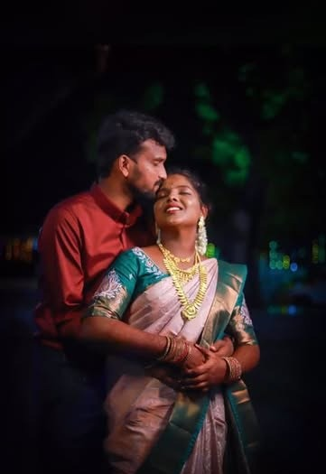
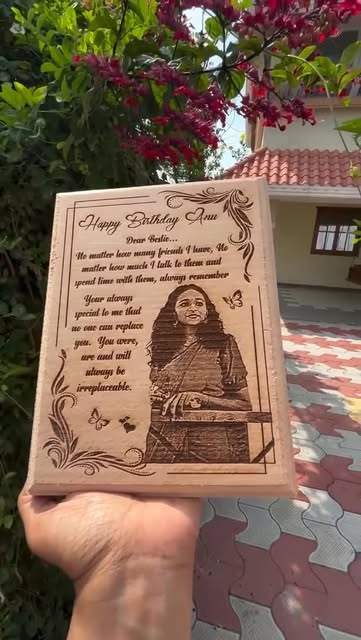
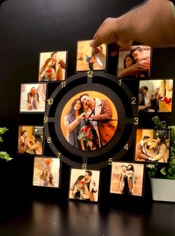

We capture your memories.
Wedding photographer in Udayampalayam, Coimbatore. Photo gifts too.
Check your date on WhatsAppRecent shoots



Gifts from your photos
1000+ models. Design and theme can be customised, and shipping is free.
-

-

-

-

Tell us the day
Occasion, date and place, sent to us on WhatsApp.
Your message
Send on WhatsAppor call +91 77087 30302
Find us
- 5.0 on Googlefrom 237 reviews
- 8 AM to 10 PMopen every day
- Udayampalayam, Coimbatore28, Kannapiran Mills Rd, Chinna Ayyavu Thevar Layout, 641028 Directions